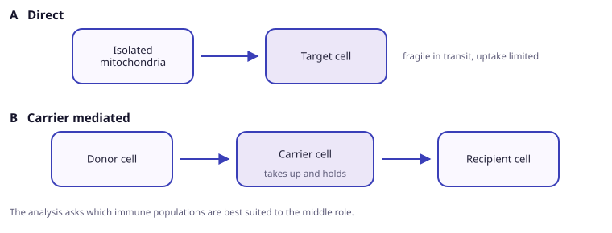
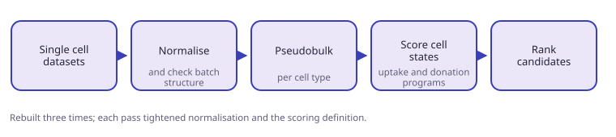
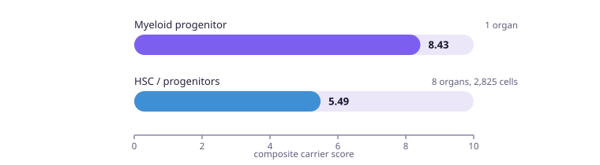

Rather than delivering isolated mitochondria directly, use a cell as the carrier. This project built a single-cell pipeline across the immune system to rank which populations can receive, hold and redistribute mitochondria. The myeloid progenitor ranks highest, with a highly specific surface marker but a narrow tissue distribution.

Rationale
- Isolated mitochondria are fragile in transit and poorly taken up. That is the constraint from the wet-lab work.
- A cell that takes up mitochondria and delivers them elsewhere avoids exposing them to a buffer.
- This makes delivery more controlled and potentially targeted.

Method
- No prior single-cell experience. Two weeks at the start of July to learn data structures, normalisation, pseudobulk analysis, batch structure and cell-state scoring.
- The pipeline was rebuilt three times, each pass tightening normalisation and the scoring definition.
- Now final and awaiting review.

Questions
- Which pathways correlate with mitochondrial uptake and transfer?
- Which immune cells are strongest at producing, receiving and donating mitochondria?
- Which cells can reach each other, and which are best placed to donate?
Results
- Myeloid progenitor is the strongest candidate, at a composite score of 8.43.
- Its marker, ITGA2B (CD41), is present in 87% of its cells against 3% across other cell types.
- It is found in a single organ, which limits where it can be sourced.
- Haematopoietic stem cells and progenitors score 5.49 but span 8 organs and 2,825 cells, with FLT3 (CD135) as the marker.

| Population | Score | Marker | Breadth |
|---|---|---|---|
| Myeloid progenitor | 8.43 | ITGA2B (CD41) | 1 organ |
| HSC / progenitors | 5.49 | FLT3 (CD135) | 8 organs, 2,825 cells |
Trade-off
- Highest score with the cleanest marker, but one organ.
- Lower score, but broadly distributed and far easier to obtain.
- Which matters more depends on whether the carrier has to be sourced from the patient.